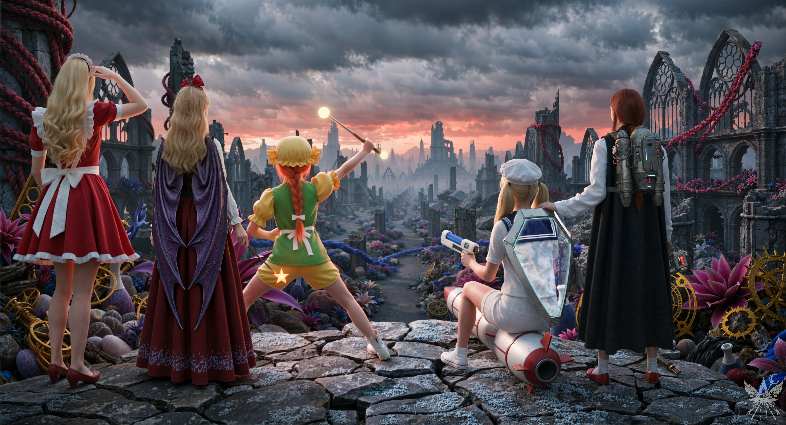
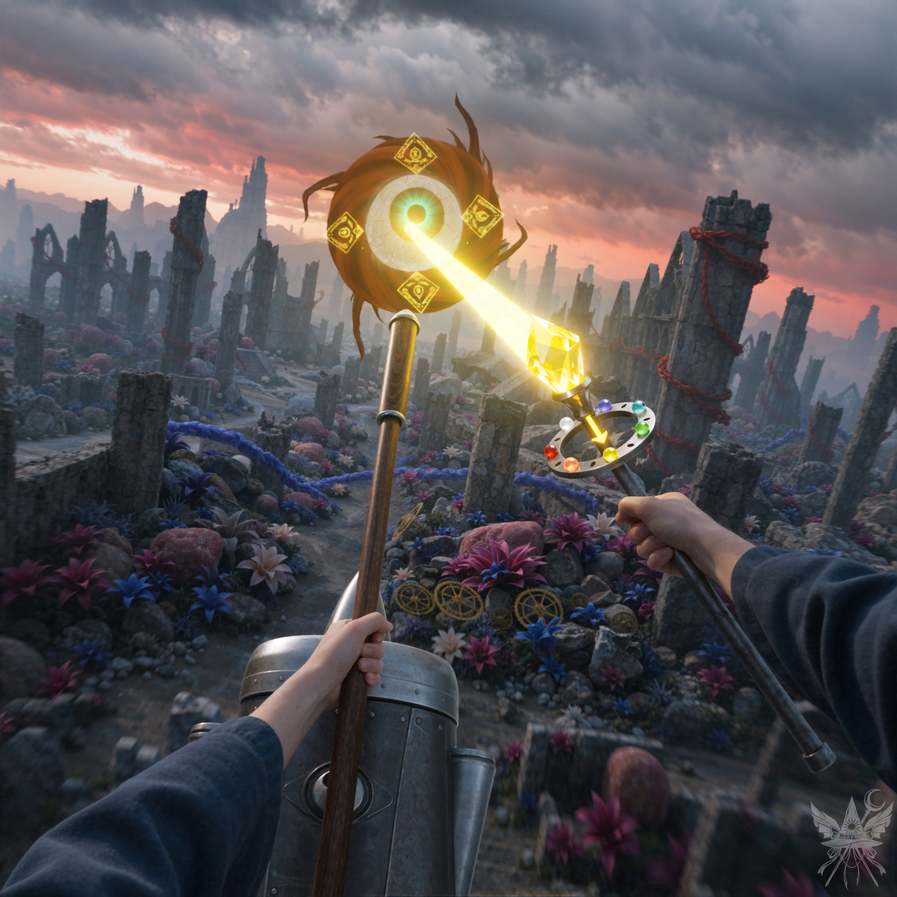
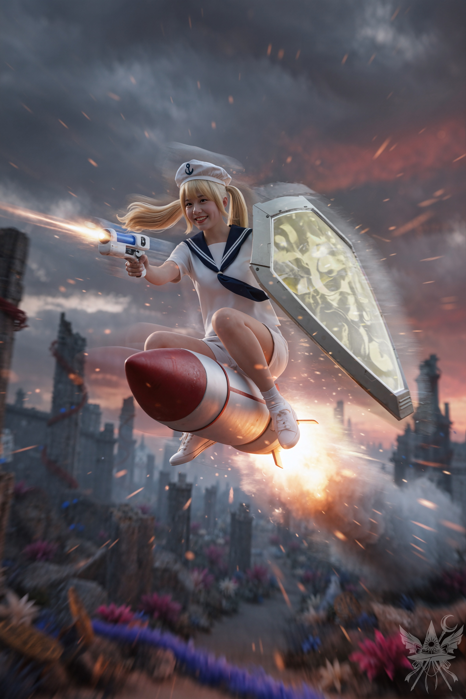
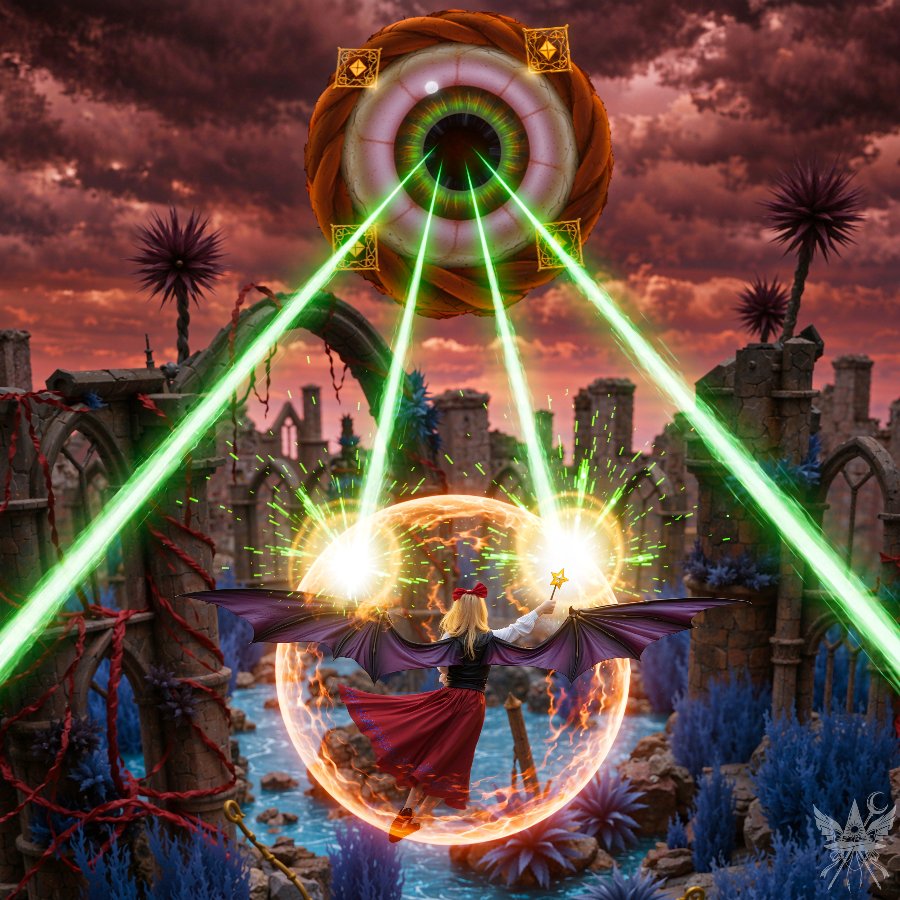
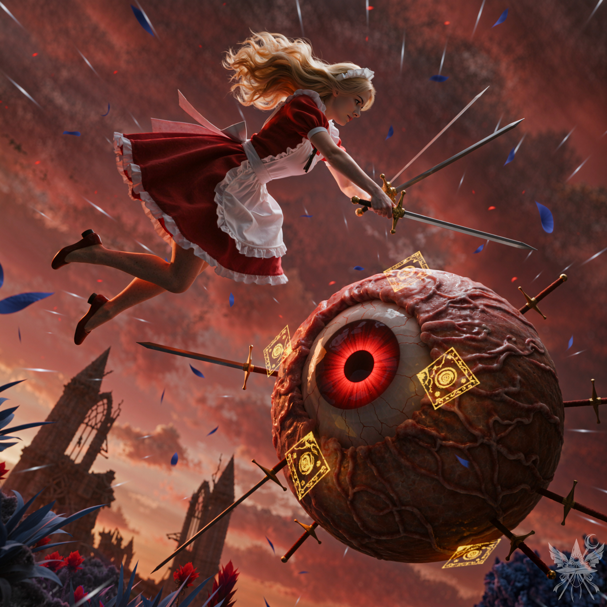
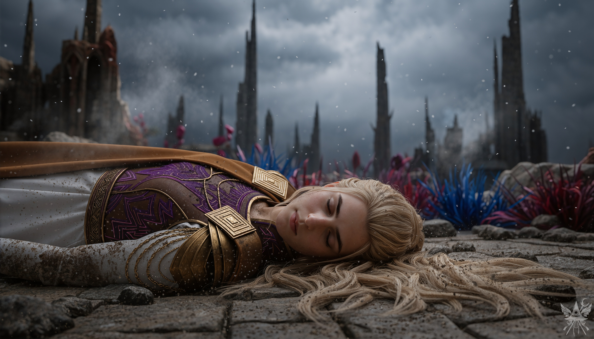

第62章 ヴィナの廃墟での激戦
かつて科学錬金術の研究所として栄えた「ヴィナ」は、実験の失敗によって廃墟と化し、長い年月が過ぎていた。今では「中央ゴミ捨て場」と蔑まれ、使い古されたポーションや壊れた杖、複雑な機械部品といったガラクタが山積みになっている。しかし、魔界の住人たちはこの場所を本能的に忌み嫌っていた。捨てられたガラクタには黒魔術師や悪魔が手放した危険な呪物が紛れ込み、不用意に触れれば正気を失うか、最悪の場合は命を落とす。崩れかけた地下室には密輸業者の巧妙な隠し部屋があり、張り巡らされた警報魔法が侵入者を容赦なく所有者へ通報する。そして何より、この廃墟には恐ろしく残忍な怪物「ユウゲン・マガン」が頻繁に出没するのだ。
五つの目玉がそれぞれ独立して宙に浮かび、一体となって動く異形の怪物。かつて若い巫女が勇敢にも戦いを挑んだが、一時的に退けるのが精一杯だったという。それぞれの目玉は異なる色に輝き、まるで独立した意志を持っているかのように、あらゆるものを焼き尽くす破壊光線を放つ。
今日、この死地へ足を踏み入れたのは、魔女、科学者二人、悪魔二人、そして妖怪という極めて奇妙な集団だった。彼らは「ユウゲン・マガン討伐」というもっともらしい目的を掲げてはいるものの、その実、高潔さなど欠片もなく、各々が腹の底に全く別の思惑を抱えていた。
上空を覆う重く冷え切った暗雲と、地平線を焼き尽くすような強烈な熱線のコントラスト。崩れかけた無機質な石造りの廃墟に、極彩色で毒々しい異界の植物が絡みつき、錆びた機械の残骸が散乱している。焦げたような匂いが漂う乾燥した空気の中、決して交わるはずのなかった者たちの奇妙な連帯感が、確かな静寂となって場を支配していた。

メデアは少し考え、全員へ視線を向けた。
「軍隊が来る前に、ユウゲン・マガンを倒してさっさと魔界から出ましょう」
「やったー！ これで家に帰れるの！？」
オレンジが無邪気な歓声を上げる。
「ええ、帰るわ。でもその前に、地獄で片付ける用事があるの。……まずは目の前の怪物を仕留めることに集中しましょう。戦略通りに動けば、必ず勝機はあるわ」
「で、メデア先生？ 具体的にどんな作戦でいくのかしら」
夢美が挑発的に口角を上げる。他の者たちも、真剣な面持ちでメデアの言葉を待っていた。
「できるだけ早く攻撃を開始して、チャクラの相性を活かしましょう。私は水色の目玉を担当します。攻撃は杖の黄色モード、防御はクリソプレーズを使うわ。……どうかしら？」
メデアは提案しながら、杖の回転式リングを「黄色」へ合わせた。
「チャクラの相性ね。ふふ、メデっちったら、もうマスターしちゃったみたいじゃない。でも、全員がそんな都合のいい相手と戦えるわけじゃないわよ？」
エリスが皮肉っぽく笑う。
「ええ、もちろん。夢子さんも同じ相性で戦えるので、赤い目玉をお願いします」
「承知いたしました。一つであれば造作もありません。五つ全てを同時に相手取るのは骨が折れますが、散開しての各個撃破であれば……」
夢子が静かに頷く。
「次はオレンジ」
名前を呼ばれ、オレンジが嬉しそうに駆け寄ってきた。
「オレンジはオレンジ色の目玉ね。防御はできる？」
「このリング、ただの飾りだと思ってるの？ メデたんったら、オレンジをナメちゃダメ！」
「それは心強いわ。とにかく、防御は忘れないでね。夢子さん、オレンジが苦戦していたらフォローをお願いします。後は状況に応じて対応を」
夢子は表情一つ変えずに頷いた。メデアは夢美とちゆりの方へ向き直る。
「黄色い目玉は、二人にお願いできますか？ ちゆり、盾を黄色モードに切り替えて夢美さんを守って。攻撃は弾幕でお願いね」
「了解だ！ 夢美様はどうする？」
ちゆりが力強く頷き、夢美を見上げる。
「ええ、夢美さんには科学の力を見せていただきたいです。期待していますよ」
メデアはそう言うと、少しだけ声のトーンを落とした。
「……ただし、放射能汚染や魔界を吹き飛ばすような大爆発は、どうかご勘弁を」
エリスが全員を見回し、大げさに肩を落とした。
「……ってことは、アタシには……緑の目玉なのね……？」
「ええ、そうよ。何か問題でもあるの？」
「もう、かわいそうなエリスちゃんをいじめるのね……。ひどいわ、メデっち。理不尽な戦いに巻き込むだけ巻き込んで、一番厄介な任務を押し付けるとか、ありえないわ！」
「だから、何が不満なの？」
エリスはメデアに顔を近づけ、声を潜めた。
「……あのね、アタシって色っぽくて魅力的とか言われてるけど……それって本当の愛じゃないのよ。わかる？」
メデアが怪訝な顔をすると、エリスは言葉を継いだ。
「つまり、『セックスはただの手段』とか……『愛は遊びだ』とか……そういうこと」
「……それが、戦いと何か関係あるのかしら」
エリスは顔をしかめた。
「だってさ、アタシのアナーハタはあんまり発達してないのよ。たぶん、本当に誰かを愛することができないんだと思う……」
「じゃあ、それを確かめる絶好のチャンスじゃないかしら」
メデアは冷ややかに微笑んだ。
「なんて鬼女なの！ キクリを解放したら、とびっきりの報酬を要求してやるんだから！ そしたら……メデっちの魂を奪って、丸ごと食ってやるわ！ ……冗談よ。それじゃ、さっさと片付けに行きましょうか」
エリスはいつもの生意気な笑顔に戻り、メデアの肩を軽く叩いた。
「ええ、行きましょう」
思い思いの軌道を描き、空へと舞い上がる。二人の悪魔とオレンジは生まれながらの力で軽やかに空を蹴り、人間の三人もそれぞれの飛行手段で後に続いた。夢美は両手に巨大な銃を構え、重厚なジェットパックから噴出する推進力で空を駆け上がる。ちゆりは小型ミサイルに跨り、弾丸のような速度で前線を切り裂いた。レーダーを頼りに、二人は誰よりも早く黄色の目玉へ肉薄する。怪物は融合の途上にあったが、残りの四つの目玉も唐突な強襲に戸惑いを隠せなかった。
メデアは標的を見失わないよう、ジェット箒の速度を抑えながら接敵する。そのため、最初にメデアの存在に気づいたのは怪物の方だった。レーダーの表示通り、水色の虹彩を持つ目玉。仲間を呼び寄せようとした挙動は、メデアが放った黄色い弾幕によって容赦なく打ち断たれた。
目玉は水色の膜で身を守りながら、メデアと同じ高度まで急上昇してくる。距離が縮まるにつれ、メデアは黄色い弾幕の連射速度を上げた。目玉は素早い動きで大半を回避するが、命中した光弾は鈍い音を立てて防御フィールドを削り取っていく。追い詰められた目玉の瞳孔が大きく広がり、ついに反撃の牙を剥いた。
ほうきの金属製エンジンから伝わる重低音が、ブーツ越しに骨を揺らす。眼球の不気味な脈動を切り裂くように、杖の先端から放たれた高エネルギーの閃光が、焦げつくようなオゾン臭と高周波の絶叫を伴って虚空を貫いた。赤茶けた廃墟の冷たい静寂が、強烈な熱線によって一瞬にして沸騰する。

一方、夢美とちゆりは黄色い目玉を相手に、対照的な戦術で死闘を繰り広げていた。ちゆりは黄色い炎を纏った盾で夢美を庇いながら、目玉の猛烈な弾幕を紙一重でかわしていく。時折、牽制として藍色の弾幕を撃ち返すが、怪物の強固な防御フィールドに容易く減衰させられてしまう。
その間、夢美は地上で静かに布石を打っていた。地面に突き刺した金属棒を起点にゆっくりと宙へ浮き上がると、背後に巨大な赤い十字架を顕現させる。闘牛士が振るう赤い布の如く、それは目玉の意識を強烈に引きつけ、夢美へと殺到させた。
目玉は太陽のように眩い光線を放射しながら、真っ直ぐに突進してくる。ちゆりは展開した盾で光線を逸らそうと試みたが、出力の差は歴然だった。盾ごと吹き飛ばされ、夢美は避けようのない破壊の光の前に、無防備な姿を晒すことになった。
足元で爆発的に燃え盛る推進剤の圧倒的な熱気と、上空から叩きつける暗雲の冷気が激しく衝突し、荒れ狂う乱気流を生み出している。鼓膜を破るほどのロケットの轟音とビームの射出音が交錯する中、死と隣り合わせの極限状態であるにもかかわらず、ちゆりの顔には狂気じみた高揚感が張り付いていた。

緑色の目玉は、エリスの存在を認識しているのかさえ疑わしいほど、不気味なほど静止していた。その異様な沈黙に苛立ちを募らせたエリスは、皮肉たっぷりに吐き捨てる。
「何よ、アンタ。まさか、こんな美女を前に怖気づいちゃってるわけ？ フフン、退屈させないでよね、ユーマちゃん♡」
挑発するように杖を突きつけた次の瞬間、まるで罠にかかった獣が跳ね起きるように、目玉は唐突に急浮上し、容赦ない猛烈な光線を放射し始めた。
エリスは反射的にコウモリの姿へ変身し、降り注ぐ死の雨を辛くもかわしていく。だが、くすんだ緑色の防御フィールドは、弾幕をかすめるたびに不快なノイズを鳴らし、確実に限界へ近づいていた。持ち前のスピードで決定的な一撃は避けているものの、ジリ貧になるのは目に見えている。緑色の弾幕で反撃を試みるが、怪物には傷一つ刻めない。
焦燥をあらわにしたエリスは、舌打ちと共に元の姿へ戻り、愛用の琥珀色の杖を握り直した。形勢逆転の賭けに出たものの、回避しきれなかった光線の直撃を受け、彼女の体力は変身を維持する余裕すら奪われていく。
空気を焦がす圧倒的な熱量が、淀んだ赤黒い雲の下で渦を巻く。緑色の光線が防御膜に激突するたび、高圧電流が弾けるような鋭い破裂音が鳴り響き、肺を焼くような乾燥した熱風が四方へと吹き荒れた。限界まで圧縮されたエネルギーの拮抗が、空間そのものを悲鳴のように軋ませる。

オレンジと対峙する目玉は、彼女自身の性質を映し出したかのように素早く、そして予測不能だった。じゃれ合う子猫のように空中でくるくると旋回しながら、互いにオレンジ色の弾幕をばら撒き合う。同色のフィールドが空間を乱反射させ、どちらも決定打を撃ち込めないまま、戦いの高度は果てしなく上がっていった。
逃げ場のない閉鎖的な空間で、高出力のエネルギー同士が真正面から激突する。視界を覆い尽くすほどの強烈な閃光と、皮膚を刺すような熱を持った火の粉が乱舞し、息をするのも困難なほどの焦燥感が渦巻いていた。爆発の轟音が、理性を吹き飛ばすかのように鳴り止まない。

パンデモニウムのメイド長たる夢子の動きには、一切の無駄が存在しなかった。洗練された殺意の具現。赤い目玉を視界に収めるや否や、巨大な剣の形をした純白の弾幕を十振り顕現させ、一斉に投射する。
目玉は開始早々、圧倒的な暴力の前に防戦を強いられた。赤い光の幕を展開し、周囲を血の霧で満たして迎撃しようと試みるが、夢子の展開するルビー色のフィールドがそれらを悉く無効化する。彼女は目玉の周囲を優雅に旋回しながら、次々と剣型の弾幕を撃ち放った。一撃の無駄もなく、すべての剣が標的を貫く。目玉は断末魔の悲鳴と共に爆発し、生臭い赤い液体を虚空へ撒き散らした。
夢子は自身の勝利に一瞥もくれず、上空で激しい光を明滅させているオレンジの姿を捉えると、即座に軌道を変えた。
生温かく湿った肉の塊に、冷たく硬質な金属が深々と突き刺さる、ひどく生々しい感触。荒れ狂う熱風と舞い散る破片が視界を遮る中、重力すらも無視した絶対的なメイドの威圧感が、戦場の混沌を冷徹に制圧していた。

夢子は、狂乱状態のまま空高く舞い上がったオレンジと目玉を追い、魔界の空を駆け上がった。だが、極限状態の彼らに追いつくのは容易ではない。全力を振り絞り、文字通り限界を超えて戦い抜いたオレンジは、ついに空中で力尽き、糸の切れた人形のように落下を始めた。
目玉は執拗だった。無防備なオレンジへ向けて効果の薄いレーザーを乱射しながら、崩れ落ちた塔の残骸へと向かって凶悪な突進を仕掛ける。夢子は一切の迷いなく急降下し、鋭利な瓦礫にオレンジの体が激突する直前で、その小さな体を抱きとめた。
追撃を試みた目玉は、自らの勢いを殺しきれず瓦礫の山へ激突。轟音と共に破裂し、辺り一面に粘り気のあるオレンジ色の体液をぶちまけた。夢子は衣服に付着した汚濁を冷ややかに払い落とし、気を失ったオレンジを抱えたまま、次の標的を求めて再び戦場へ舞い戻る。
その頃、地表では轟音と共に展開された巨大な赤い十字架が、ヴィナの廃墟を不吉な赤色に染め上げていた。十字架の真下に立つ夢美は、手元の端末で黄色い目玉を完全にロックオンし、勝利を確信した笑みを浮かべている。
本能的な死の気配を察知したのか、目玉は必死の抵抗を試みるが、すべては徒労だった。エリスの展開する防御フィールドが、自身の魔力を急速に吸い上げられながらも、夢美への攻撃を完璧に遮断していたのだ。
ついに装置の焦点が合い、プラズマの奔流が解き放たれる。限界まで過熱された黄色い目玉は、電子レンジに入れられた果実のように内側から沸騰し、鼓膜を破るような絶叫と共に四散した。
エリスは荒い息を吐きながら、自身の右翼を見下ろす。防御フィールドを維持する代償か、被膜の一部が大きく焼け焦げ、破れていた。一方の夢美は赤いマントを翻し、科学の勝利に酔いしれていた。
むせ返るような肉の焦げる悪臭と、分厚い黒煙が辺りを覆い尽くす。足元で爆ぜる炎の容赦ない熱気と、上空から突き刺さる幾何学的なレーザーの冷徹な光。凄まじい破壊の嵐が通り過ぎた後、なびくマントの衣擦れの音だけが、勝者の静かな歓喜を代弁するように響いていた。

＊＊＊
水色と緑の目玉が、牙を剥き出しにした野獣の如く襲いかかってきた。凄まじい猛攻。反撃の隙などなく、防御に徹するほかない。とりわけ緑の目玉が放つ一撃は強烈で、フィールドを打ち破られるたびに、死の雨を必死で回避する。
その瞬間、耳をつんざく轟音と共に、ちゆりの乗る小型ミサイルが横をすり抜けていった。彼女は一瞬だけ不敵な笑みを向けると、ブラスターの銃口を緑の目玉へ突きつける。怒り狂った怪物は即座に標的を切り替え、ちゆりへの猛追を開始した。
これで、水色の目玉に集中できる。空中で大きく旋回し、確かな狙いを定めた。死角からの奇襲。黄色い弾幕が、怪物の急所を正確に射抜く。
生々しい破裂音。水色の体液が、雨のように降り注いだ。
だが、振り返った瞬間、全身の血の気が引いた。
ちゆりが、冷たい地面に横たわっている。数メートル先では、愛機の小型ミサイルが黒煙を上げていた。
緑の目玉が、再びこちらへ照準を合わせる。巨大な光球の射出。とっさに杖のリングを操作し、緑色の弾幕で応戦した。しかし、圧倒的な出力差の前に、光球は防御フィールドを容赦なく貫通する。
（緑を攻撃したのが、間違いだった……）
金属のエンジンが悲鳴を上げ、衝撃で機体から振り落とされそうになる。必死に体勢を立て直し、ちゆりの元へ急降下した。胸はわずかに上下しているが、意識がないのは明らかだった。
緑の死の雨が容赦なく降り注ぐ。防御フィールドを維持するだけで限界が近づいていた。このままでは、ちゆりと同じ末路を辿る。
「メデたん、危ない！」
悲痛な叫びと共に、オレンジが目玉へ向かって単騎で突撃を仕掛けた。だが、彼女の小さな体もまた、非情な一撃を受けて吹き飛ばされてしまう。
間一髪、夢子が前線へ舞い戻った。純白の剣を次々と顕現させ、目玉を包囲するように一斉投射する。しかし、赤の時とは勝手が違った。強固な防御膜に阻まれ、刃は硬質な音を立てて弾き飛ばされる。
窮地に陥るこちらを嘲笑うかのように、目玉は夢子を無視し、信じられないほどの速度で襲いかかってきた。
次の瞬間。
背後から生暖かい息の気配を感じたかと思うと、耳をつんざく破裂音が響き渡った。見下ろせば、衣服には悪臭を放つ緑色の液体がこびりついている。
（五つ目の怪物は倒した。……なのに、アメジストはどこ？）
アメジストの気配は、すぐ近くにある。だが、言いようのない胸騒ぎが消えない。
夢美の声に呼び寄せられ、全員が血を流して倒れるちゆりの周囲へ集まった。荒い呼吸を繰り返しているが、意識は戻っていない。
「大丈夫。肋骨を二本折ってショック状態みたいだけれど、頭を打っていないのは不幸中の幸いね」
夢美が、自分へ言い聞かせるように呟いた。
やがて、ちゆりはゆっくりと目を開け、虚ろな視線をめぐらせてから、か細い声で尋ねた。
「……勝った……？」
「ええ、勝ったわ。ちゆり、よく頑張ってくれたわね。勇敢だった」
静かに答える。
「そんな言い方……うっ……まるで、私がもう死ぬみたいじゃない……」
ちゆりは激痛に顔を歪めながら、弱々しく軽口を叩いた。
「死なせないわ」
「まあ、死にゃしないわよ。でも、アタシの翼は縫わなきゃなんないけどね。それで、メデっち。肝心のアメジストはどうなったの？」
エリスの問いに、どう答えていいか分からなかった。宝石の気配は、確かに、すぐそこにあるはずなのに。
「皆様、こちらです！」
夢子の鋭い声が、思考を断ち切った。瓦礫のそばに、人影が横たわっている。探し求めていたアメジストの波動は、そこから発せられていた。直感に突き動かされ、誰よりも早く駆け寄る。
そこには、激しい戦闘の余波でボロボロになった少女が倒れていた。かつて幻視の中で見た、創造神キクリの相談役、ユゲミアに瓜二つの顔。彼女は完全に目を閉じ、息絶えているようだった。
低温で乾燥した空気が、焦げた土埃と灰の匂いを運んでくる。圧倒的な破壊の嵐が去り、空から細かい灰の粒子が雪のように降り積もっていた。周囲を取り囲む鋭角的な廃墟のシルエットの中で、彼女の横たわる無防備な姿だけが、ひどく冷たく、深い停滞の静寂に沈んでいる。

夢子は一切の躊躇いなく少女の顎をこじ開けた。その奥には、探していた青紫色のアメジストが眩い光を放ちながら埋め込まれていた。アメジストを引き抜いた夢子は、それを片手で弄びながら、もう一方の手を少女の胸に当てる。
その瞬間、言いようのない強烈な嫌悪感が心を支配した。夢子がその宝石に触れていること自体が、ひどく不快で許し難かった。
「魂が抜けかけています。……メデア様、この方をご存知ですか？」
冷徹なメイド長が、静かに視線を向けてくる。
「ええ。私の幻視で見た、キクリの相談役です。ユウゲン・マガンに変身したのは……彼女だったのね」
「それでは、このまま安らかに眠らせてあげましょう。もうすぐ魂はあの世へ旅立ちます。遺体は……燃やします」
「ちょっと待って！ 生かしておくことはできないの？」
エリスが二人の間に割って入った。
「どうしてですか、エリス」
「何か重要な情報を教えてくれるかもしれないじゃない。それに、アメジストさえ取り外せば、もう無害でしょ？」
「お待ちください。まさか……私に『アレ』を行えと言うのですか？」
夢子の顔に明らかな緊張が走り、その眼光が鋭くエリスを射抜いた。
「そうよ、夢子ちゃんなら簡単でしょ？ 宇宙の摂理を使って、ユーマちゃんの運命を変えればいいのよ！」
「確かに、魂を肉体に戻すことは可能です。しかし、莫大な魔力を要します。私には、それほどの力はありません。それに、神綺様も、サリエル様も今は……」
夢子は言葉を詰まらせ、鉛色の空を見上げた。重く垂れ込めた雲は、今にも雨を落としそうなのに、一向に降る気配はない。
エリスが、こちらの手にあったクリソプレーズを唐突にひったくり、夢子へ突き出した。
「これを使えばいいじゃない。壊してもいいわよ。どうせ、もう用済みでしょ？」
「エリス、ちょっと！ それは私のものよ」
「ごめん、メデっち。でも、これで十分でしょ？」
エリスは悪びれもせず、軽く鼻で笑う。
「ええ……強力なアーティファクトを破壊すれば、あるいは。しかし……」
夢子は言葉を濁し、こちらへ向き直った。
「決定権はメデア様にあります。この方を助けたいとお思いですか？」
何も答えられなかった。夢子に対する理不尽なまでの嫌悪感が、胃の奥からせり上がってくる。
（おかしい。どうして私は、こんなにイライラしている……？）
混乱する。夢子を憎む理由など、何一つないはずだ。
「夢子さん。そのアメジスト……私にください」
「メデア様、お気を確かに。……アメジストは、本来あなた様のものです」
夢子は鋭い視線で一瞥すると、恭しく宝石を差し出した。
それを受け取った瞬間、全身の血管に心地よい温もりが広がっていくのを感じた。先ほどまで夢子へ向けていたどす黒い憎悪は、まるで幻だったかのように綺麗に消え去っている。
「……申し訳ありません。この宝石は、精神に強い影響を与える可能性があります。保管には、十分にご注意を」
少し離れた場所では、ちゆりがオレンジと夢美に支えられながら、痛みに顔を歪めつつもゆっくりと身を起こしていた。横たわるユゲミアの姿と、こちらのただならぬ空気に、皆が言葉を失っている。
重苦しい沈黙を破ったのは、夢美だった。
「保管？ それなら私に任せて。王冠に戻すまで、私が厳重に管理しておくわ」
「ちょっと待ってよ！ 夢美ちゃん、うっかり落としたりしない？ アタシなら、失くしたものを何でも回収できるから、絶対に安全よ！」
エリスがすかさず口を挟む。
言い争いを始めた二人を、交互に見つめる。どちらに預けるべきか決めかねていると、ふと、オレンジと目が合った。
「オレンジ……？ ダメダメ！ わたし、すぐどこかに失くしちゃうし！ そんなに大事なら、メデたんがそのまま持ってればいいんじゃない？」
[SYSTEM ALERT: 音響兵器デプロイ完了]
▼ 本章の絶望を1000%味わうための専用聴覚データ ▼
■ YouTube：『Perfect Knife Disorder（パーフェクト・ナイフ・ディスオーダー）』